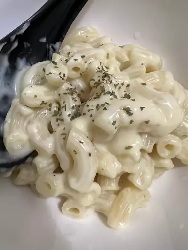

Looking for a homemade alternative to boxed mac and cheese that's just as quick and easy? This stovetop mac and cheese uses staple ingredients and comes together in just 25 minutes. You'll want to bookmark this recipe for busy weeknights. The good news is, it's so simple that once you make it a couple times, you'll likely have it memorized.